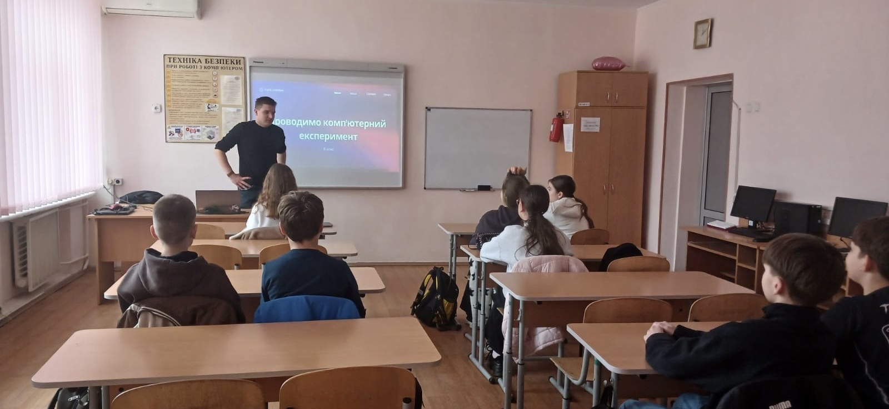
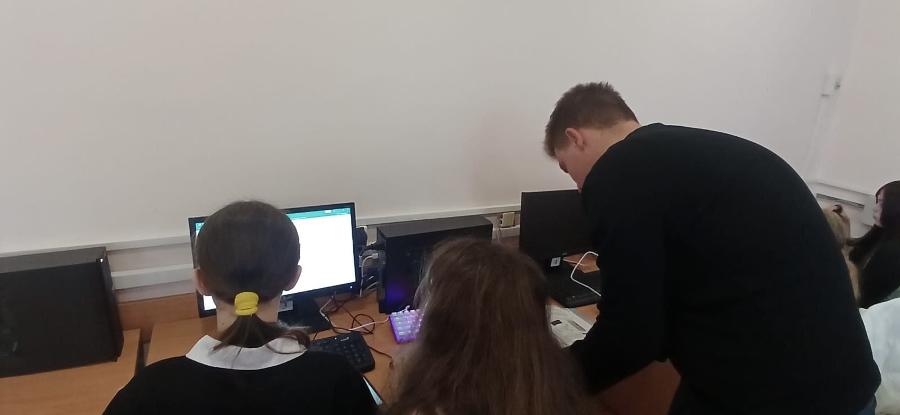

Педагогічна практика
Я, здобувач вищої освіти, проходив педагогічну практику у закладі загальної середньої освіти, де мав можливість спробувати себе у ролі вчителя інформатики та класного керівника. Дана практика стала важливим етапом у моєму професійному становленні, оскільки дала змогу поєднати теоретичні знання з реальним досвідом.
Під час проходження практики я ознайомився з організацією освітнього процесу, особливостями роботи вчителя інформатики, плануванням уроків та веденням документації. Я проводив уроки та виховні заходи, використовуючи сучасні підходи до навчання.

Особливо хочеться відзначити підтримку вчительки інформатики, яка допомагала мені у підготовці до уроків і ділилася своїм досвідом. Завдяки цьому я зміг краще зрозуміти професію вчителя.
Учні 6-А класу були активними, вихованими та зацікавленими у навчанні. Робота з ними принесла багато позитивних емоцій.

Загалом практика була дуже корисною. Вона допомогла мені розвинути педагогічні навички, комунікацію та відповідальність.